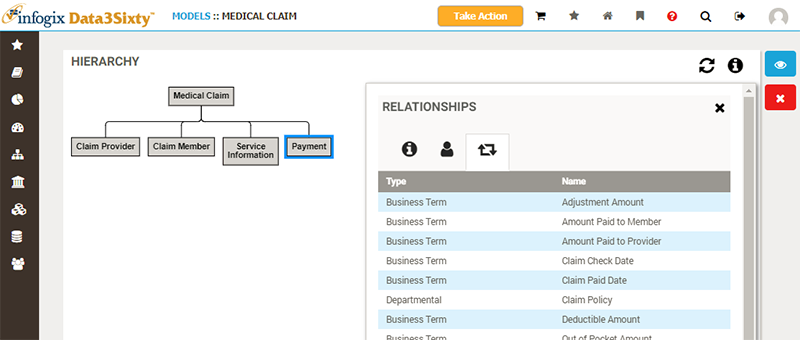
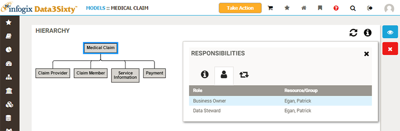
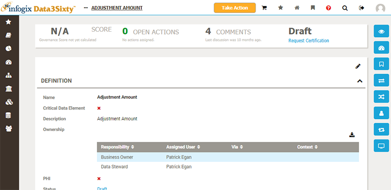
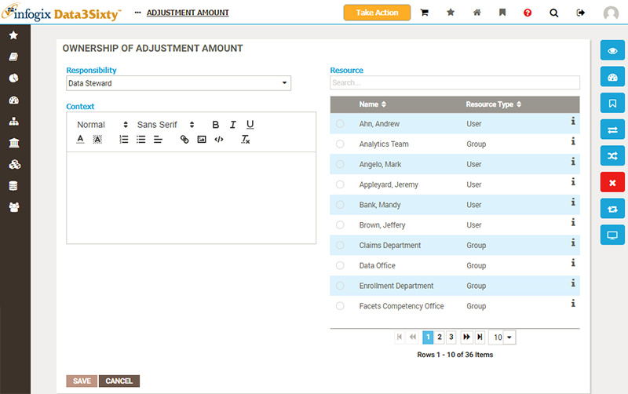

Models can be used to disseminate the assignment of responsibilities to sub-models and related Glossary artifacts.
Consider the Medical Claim-Payment model which has a number of related artifacts, as shown below:

We can assign responsibilities to the Medical Claims model asset, and these responsibilities will be inherited by all child model assets, including Payment:

Those Glossary artifacts related to the Payment model will then also inherit these responsibilities:

Let us assume that we wish to assign a different set of responsibilities to the artifact Adjustment Amount. We can override the responsibilities inherited from the model by simply setting explicit responsibilities on this particular artifact, from the Ownership view:
